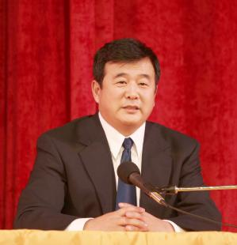

Tài liệu gốc: http://dajiyuan.com/gb/5/2/27/n829614.htm
Phóng viên Sử Kiếm và Vương Phương
27/2/2005
|
 |
Hơn một ngàn học viên Pháp Luân Công từ khắp nơi trên thế giới đã tề tựu tại Paramount Center, San Francisco, để tham dự Pháp Hội [1] thường niên miền tây Mỹ quốc vào ngày 26 tháng Hai, 2005. Ông Lý Hồng Chí, người sáng lập Pháp Luân Công, đã đến và giảng Pháp trong khoảng 40 phút, và sau đó trả lời các câu hỏi trong khoảng 2 giờ đồng hồ.
Ông Lý Hồng Chí mở đầu bằng câu “Ngày đông đã qua, ngày xuân đã tới”. Ông nhận định rằng những ai đã tham gia đàn áp Pháp Luân Đại Pháp chắc chắn sẽ vô cùng ân hận về cuộc đàn áp đó vì những gì họ sẽ phải đối mặt. Ông nói rằng người dân thế giới ngày càng thấy tôn trọng lòng kiên định của các học viên Pháp Luân Đại Pháp, bởi vì những học viên ấy đang phải đối mặt với một bộ máy tuyên truyền khổng lồ của một quốc gia. Các học viên Pháp Luân Công đã vượt qua một cuộc đàn áp độc ác độc nhất vô nhị. Điều ấy, sẽ khiến nhân loại toàn thế giới phải nhìn nhận họ bằng một con mắt kính nể.
Về hai vấn đề nóng bỏng hiện nay —một là “cửu bình” (loạt chín bài bình luận về đảng cộng sản do thời báo Đại Kỷ Nguyên công bố) và hai là vấn đề thoái đảng (rút lui khỏi Đảng cộng sản Trung Quốc); hai vấn đề thời sự này đang được cộng đồng thế giới, nhất là cộng đồng người Hoa, đặc biệt quan tâm— Ông Lý Hồng Chí nói rằng chỉ sau một tháng kể từ khi “cửu bình” được công bố, nó dã được phát tán khắp Trung Quốc Đại Lục.
Những ai về cơ bản đã rút khỏi ĐCSTQ (ví dụ như không đóng đảng phí, không sinh hoạt đảng trong một thời gian lâu), nhưng chưa chính thức công bố rút khỏi đảng, thì, Ông Lý Hồng Chí nói, nhân tố của con quỷ tà ác cộng sản vẫn không được tiêu diệt hoàn toàn hết trong họ. Ông thấy rằng dùng biệt danh để công bố chính thức rút lui khỏi ĐCSTQ cũng có tác dụng tốt.
Vùng San Francisco đã là một vùng tại Mỹ quốc có Pháp Luân Công truyền bá rộng rãi. Lần đầu tiên ông Lý Hồng Chí giảng Pháp tại Mỹ Quốc là vào năm 1996 ở San Francisco. Sau khi ĐCSTQ khai mở cuộc đàn áp Pháp Luân Công vào năm 1999, Ông Lý Hồng Chí đã không tiếp xúc với công chúng bên ngoài trong khoảng hơn một năm. Cho đến tháng Mười năm 2000, lần đầu tiên ông Lý Hồng Chí trở lại tiếp xúc với công chúng kể từ khi khai mở cuộc đàn áp thì cũng là ở San Francisco.
Tại Pháp hội, có 11 học viên có bài phát biểu chia sẻ kinh nghiệm tu luyện. Một số là học viên mới, một số là học viên đến từ Trung Quốc Đại Lục, và một số đã tu tập hơn 10 năm trải qua rất nhiều gian khó đủ loại.
Anna từ Los Angeles từng là một đứa trẻ sinh thiếu tháng với bệnh còi xương, sau đó cô bị bệnh viêm khớp, rồi thấp khớp và nhiều chứng bệnh khác. Cô phải uống hoóc-môn thường xuyên, khiến thân hình cô biến dạng. Đến năm 1986, cô mắc bệnh thấp khớp và phải dùng thuốc giảm đau mới có thể ngủ được. Năm 1992, sức khoẻ của cô suy sụp đến mức gần như bại liệt. Mùa thu năm 1995, cô bắt đầu tham gia học Pháp Luân Công, và chỉ sau 7 ngày, tất cả bệnh tật của cô đều biến mất. Cô nói, “Đây là lần đầu tiên sau 20 năm tôi mới thực sự cảm nhận một cơ thể không còn đau nhức”. Điều ấy kiến cô mừng lắm, và từ đó cô hiểu được ý nghĩa chân thực của cuộc đời. Khi nói rõ sự thật cuộc đàn áp Pháp Luân Công cho mọi người, cô thường nhắc đến “cửu bình”.
Cô nói rằng những ai sinh sống tại Trung Quốc Đại Lục thật khó mà tránh khỏi ảnh hưởng của “văn hoá đảng”, một văn hoá do ĐCSTQ nhồi nhét vào đầu người dân một cách hệ thống qua nhiều năm cầm quyền. Cô đọc “cửu bình” từ đầu đến cuối năm lần rồi, và mỗi lần đọc lại, cô lại cảm thấy như ảnh hưởng của con quỷ cộng sản trong cô lại được tẩy trừ đi một lần nữa, và cô hiểu sâu sắc hơn nữa bản tính tà ác của ĐCSTQ, một chính thể phản vũ trụ, đấu với trời, đấu với đất, phản tự nhiên.
Theo thống kê của Minh Huệ Net —website chính thức của Pháp Luân Đại Pháp— có hơn 1418 học viên Pháp Luân Công từ hơn 30 tỉnh và khu tự trị tại Trung Quốc đã được kiểm chứng là bị ĐCSTQ bức hại đến chết. Các tỉnh có con số thống kê tử vong nhiều nhất, xếp thứ tự từ cao xuống thấp, là Hắc Long Giang, Hà Bắc, Liêu Ninh, Cát Lâm, Sơn Đông, Tứ Xuyên và Hồ Bắc. Trong các học viên bị bức hại đến chết, 53% là phụ nữ, 41% là người có tuổi từ 50 trở lên.
Ngày Chúa Nhật sau Pháp hội, các học viên Pháp Luân Công đã tổ chức một số hoạt động: diễu hành, họp báo, lập “bức tường thành của lòng cam đảm”,… để giúp nhiều người dân thế giới hơn nữa biết về sự thật cuộc đàn áp Pháp Luân Công tại Trung Quốc.
Chú thích:
[1] Pháp Hội: Các học viên Pháp Luân Đại Pháp (Pháp Luân Công) thường tổ chức các cuộc mít-tinh với quy mô khác nhau để trao đổi kinh nghiệm tu tập và thảo luận về các đề tài khác nhau.
{kind=link}